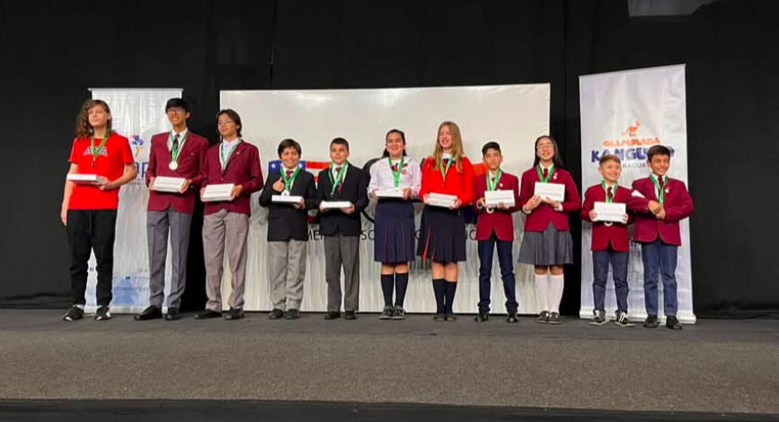
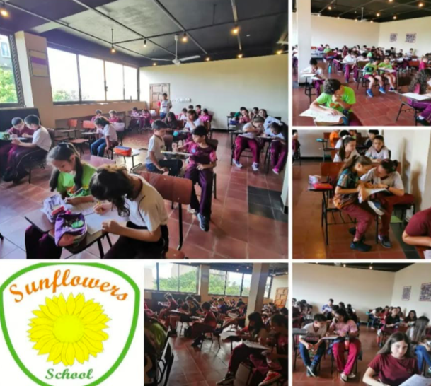
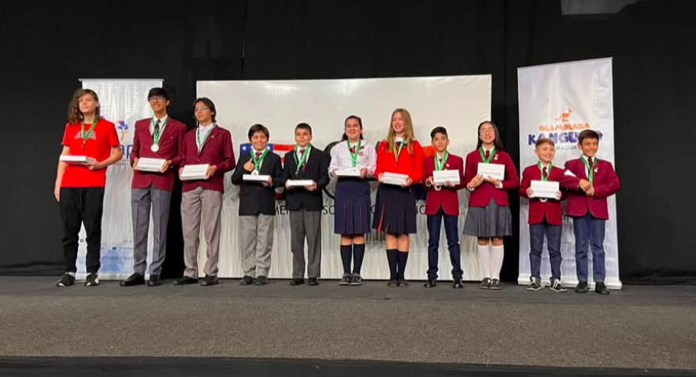
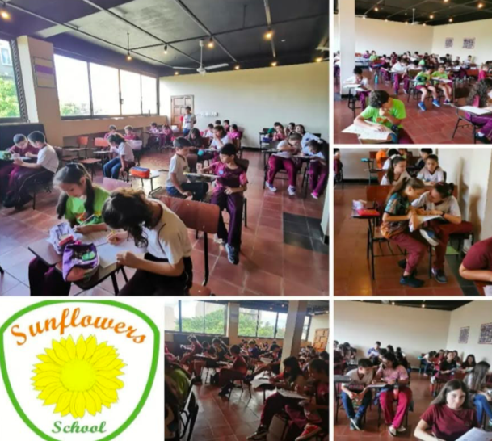

Los inicios
El Colegio Privado Bilingüe Girasoles fue fundado en el año 1998 como una iniciativa privada impulsada por la Mag. María Nilda Martínez, quien en ese entonces se desempeñaba como profesora de inglés.
Fundación y crecimiento
El 14 de febrero del año 2000 se iniciaron oficialmente las clases bajo el nuevo nombre de “Girasoles”, con una matrícula inicial de 35 alumnos distribuidos en los niveles Kinder 3, Kinder 4 y Kinder 5, en los turnos mañana y tarde. Esta nueva etapa se formalizó mediante la Resolución N.º 208, emitida el 18 de mayo de 2001, que autorizó el funcionamiento de la institución bajo la denominación “Colegio Privado Bilingüe Girasoles”, con el número de registro 5930.
Logros y reconocimientos
Durante los dos primeros años de funcionamiento formal, la institución demostró un desempeño positivo en términos académicos y organizativos. Se consolidaron las bases pedagógicas, se fortalecieron los vínculos con las familias y se sentaron las pautas administrativas necesarias para garantizar una gestión eficiente. Este período inicial fue fundamental para posicionar al colegio como una propuesta educativa seria, innovadora y comprometida con la formación integral de los estudiantes.


 


